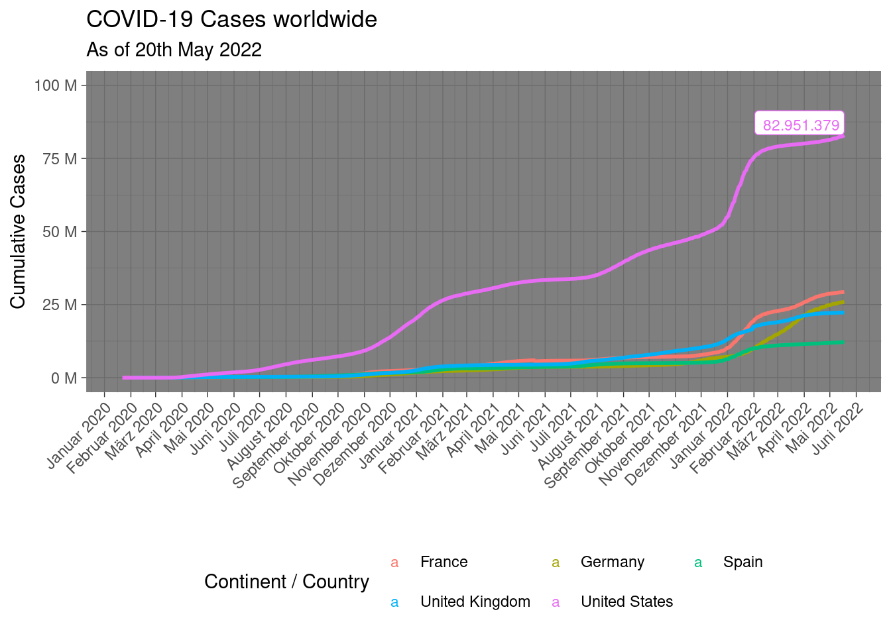
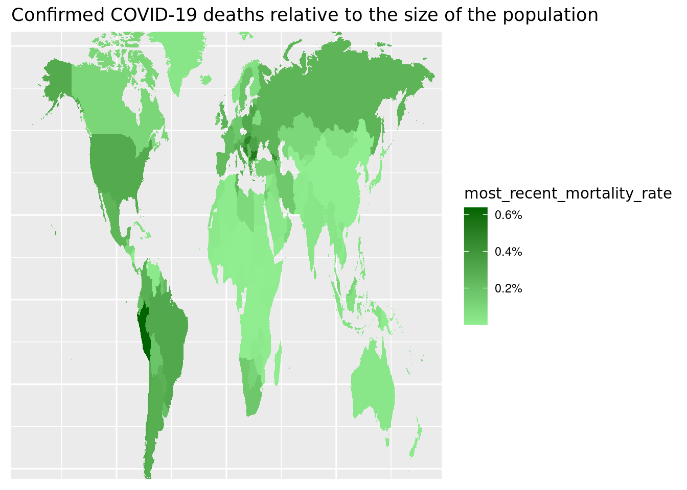

library(tidyverse)
library(lubridate)covid_data_tbl <- read_csv("https://covid.ourworldindata.org/data/owid-covid-data.csv")refined_data <- covid_data_tbl %>%
select(location, date, total_cases) %>%
mutate(date = ymd(date)) %>%
filter(location %in% c("Germany", "United Kingdom", "France", "Spain", "United States"))
labels <- refined_data %>%
arrange(desc (date), desc(total_cases))%>%
mutate(total_cases_text = scales::dollar(total_cases, big.mark = ".",
decimal.mark = ",",
prefix = "",
suffix = "")) %>%
head (2)refined_data %>%
ggplot(aes(date, total_cases, color =location)) +
geom_smooth(method = "loess", se=FALSE) +
geom_label(label = labels$total_cases_text,
vjust = 0.5,
hjust = 0.5,
size=3,
data = labels) +
expand_limits(y=10e7) +
labs (
title = "COVID-19 Cases worldwide",
subtitle = "As of 20th May 2022",
x = "",
y = "Cumulative Cases",
) +
scale_y_continuous(labels = scales::dollar_format(scale = 1/1e6,
prefix = "",
suffix = " M")) +
scale_x_date(date_labels = "%B %Y", date_breaks = "1 month") +
theme_dark() +
theme (legend.position = "bottom",
legend.direction = "horizontal",
axis.text.x = element_text(angle = 45, hjust = 1, vjust = 1)) +
guides(color=guide_legend(nrow=2, byrow=TRUE, title = "Continent / Country"))
world <- map_data ("world")
mortality_rate <- covid_data_tbl %>%
mutate(location = case_when(
location == "United Kingdom" ~ "UK",
location == "United States" ~ "USA",
location == "Democratic Republic of Congo" ~ "Democratic Republic of the Congo",
TRUE ~ location
), mortality_rate = total_deaths/population) %>% distinct() %>%
filter (!is.na(total_deaths), !is.na(population)) %>%
group_by(location) %>%
summarise(most_recent_mortality_rate = last(mortality_rate)) %>%
ungroup() %>%
select(location, most_recent_mortality_rate)
combined_data <- merge(x= world, y=mortality_rate, by.x = "region", by.y = "location") %>%
select(long, lat, region, most_recent_mortality_rate) %>%
group_by(most_recent_mortality_rate) %>%
slice(1)Hint: Add + theme(axis.text.x = element_text(angle = 45, hjust = 1)) to your plotting code to rotate your x-axis labels. Probably you have to resize the viewer pane to show the entire plot. For your website, try different values for fig.width and fig.height in your markdown document:
combined_data %>%
ggplot() +
geom_map(aes(x = long, y= lat, map_id=region, fill=most_recent_mortality_rate), map=world) +
scale_fill_continuous(labels=scales::percent_format(accuaracy= 0.001), low="lightgreen", high="darkgreen")+
labs (
title = "Confirmed COVID-19 deaths relative to the size of the population",
)+
theme_bw() +
theme (title = element_text( "Mortality Rate"))